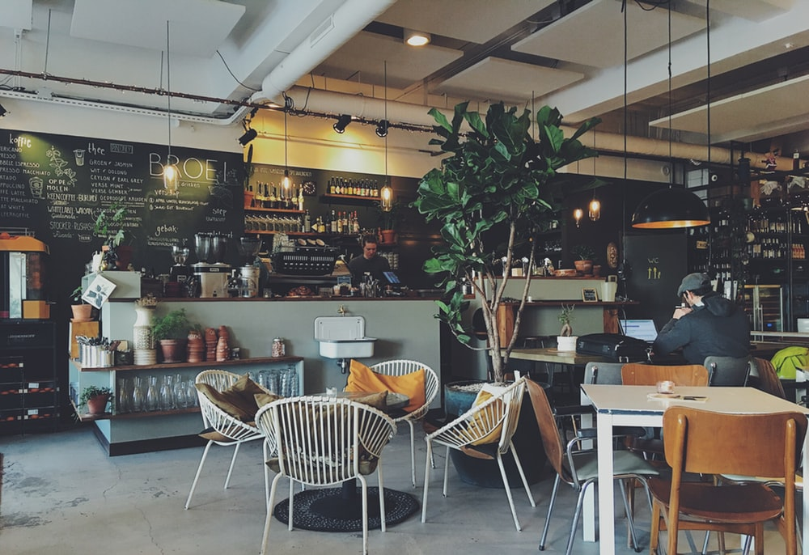
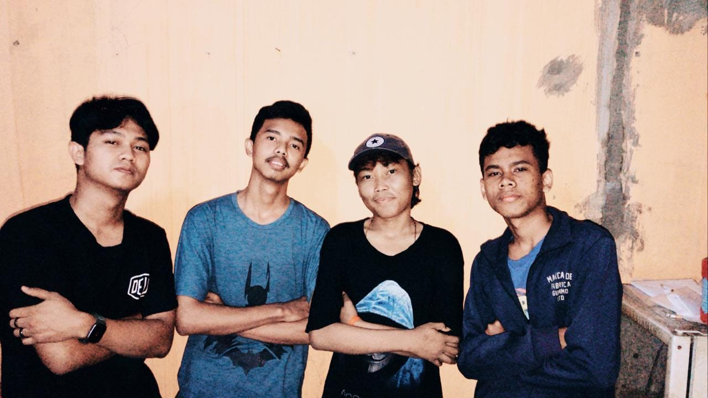

CAFE BRO
Cafe ini sangat pas untuk khaula muda, karena tempatnya yang cozy abis dan sangat instragamable, jika kalian suka dengan cafe yang modern, kekinian abis, cocok juga buat keluarga, buat nongkrong sama teman satu linting, cocok buat tempat untuk bersua foto ria, karena tempatnya sangat instagramable sehingga fotonya bagus untuk feed dan instastory. And then, tempat ini didirikan oleh para anak muda yang mempunyai dream high untuk menjadi pengusaha kelas atas dan mereka berniat untuk memajukan para petani kopi di desa terpencil.
CHOISE CAFE
- About us
- Fasilitas
- Menu
- Pay
- Sosmed
About us
Cafe ini terletak di Margonda, semua harga menu sangat ekonomis. Sangat cocok untuk kantong Mahasiswa dan pelajar, jadi jangan ragu-ragu untuk mampir dan nongkrong di Cafe Bro dijamin nagih. Satu lagi tempat ini sangat cozy dan cocok untuk nongkrong santai atau tempat untuk berdiskusi, apalagi dengan ornamen yang sangat instragamable sangat cocok untuk berselfie ria dan di upload di feed atau instastory instragram. Cafe ini dikelola oleh beberapa pemuda yang bermimpi untuk menjadi pengusaha coffe terkenal. Mereka bernama Angga Syahputra, Umar Abdullah, Reu Azaria, Ahmad Asep Nurfadillah dan Mutaqqin Izuddin. Mereka sangat berjuang untuk mendirikan Cafe ini, bermula dari menjadi buruh di salah satu CV Cosmetik, tukang las, dan ada yang menjadi Mahasiswa untuk menambah pengetahuan dalam mengelola bisnis dan pada akhirnya tepat tanggal 22 Juli 2021 Cafe ini berdiri dengan hasil jerih payah mereka sendiri.

Fasilitas
Fasilitas yang ditawarkan Cafe ini sangat beragam dan semuanya itu sangat mengenakan pelanggan, ada beberapa fasilitas utama yang pastinya membuatmu betah untuk nongkrong terus di Cafe ini yang pertama Free Wifi All Time. Cafe ini menyediakan Wife secara gratis, sehingga membuatmu betah untuk berlama-lama disini, karena itu Cafe ini sangat recommended bagi kalian pelajar dan Mahasiswa. Kedua, Caffe ini memiliki lahan parkir yang cukup luas bahkan muat untuk empat sampai lima mobil. Ketiga, tempat ini memiliki banyak sekali buku, dimulai dari buku novel, komik, dan buku nonfiksi, sehingga membuat kalian pencita buku pasti betah untuk nongkrong disini, sambil minum coffe pasti asyik bangat sambil baca buku juga. Keempat, tempat ini sangat instragamable sehingga bagi kalian yang selebgram dan hobi berselfi ria pasti sangat cocok untuk kalian. Itu aja beberapa fasilitas utama yang disediakan di cafe ini.

1. Makanan
| No |
Nama |
Harga |
| 1 |
Nasi Goreng |
13.000 |
| 2 |
Odading Mang Oleh |
2.500 |
| 3 |
Indomie Goreng/Rebus |
4.000 |
| 4 |
Chicken Rools |
12.000 |
| 5 |
Soup Majah |
10.000 |
2. Minuman
| No |
Nama |
Harga |
| 1 |
Fruits Juicy |
13.000 |
| 2 |
Minuman Gelas |
2.500 |
| 3 |
Melon Tea |
4.000 |
| 4 |
Americano |
12.000 |
| 5 |
Softly Capuchino |
10.000 |
| 6 |
Arabica Coffe |
12.000 |
| 7 |
Emeralda Caffino |
15.000 |
| 8 |
Wedang Coffe |
10.000 |
| 9 |
Hard Coffe |
17.000 |
| 10 |
Mystic Caffelatino |
20.000 |
Pay
Pembayaran dari pembelian menu di cafe ini, kebetulan kami bisa dalam segala macam pembayaran online, karena kami hampir bekerja sama dengan semua pembayaran online.
CHOISE PAY
- Atm
- Dana
- Gopay
- Buka Dompet
- Ovo
Sosmed
Caffe ini mempunyai beberapa akun sosmed untuk menunjang promosi dan agar dapat diketahui costumer, sehingga costumer tak perlu lagi untuk mengunjungu website caffe ini dan juga costumer dapat melihat diskon dan promusi di akun sosmed Caffe Bro
- Instagram
- Facebook
- WhatsApp
- Telegram
Semua yang ada di Caffe Bro sudah dijelasin semua, kalau begitu sampai ketemu di Caffe Bro secara online yak guys dan dibawah ini adalah foto para pendiri Coffe Bro.
